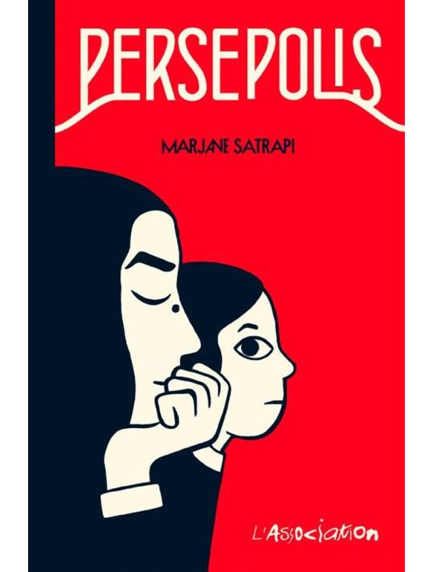

Cette séquence propose l’étude de plusieurs extraits de Persépolis de Marjane Satrapi. Les questionnaires associent compréhension, vocabulaire, grammaire et réflexion. Entre les extraits, il est intéressant de visionner le film d’animation et d’organiser des débats à partir des questions de réflexion proposées. La polysémie fait l’objet d’un exercice complémentaire après l’extrait 2.